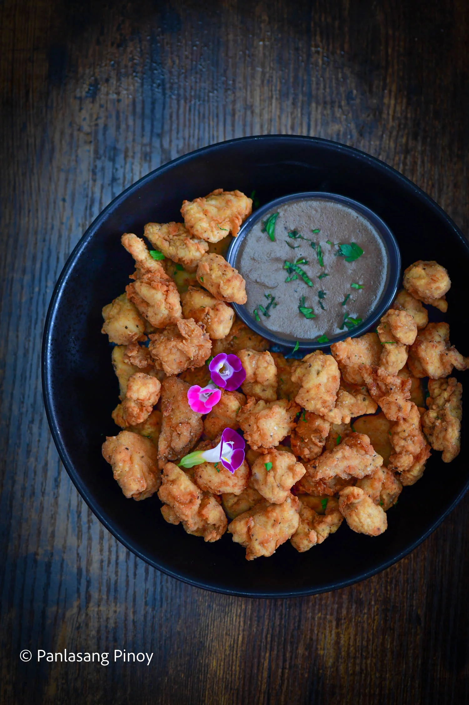

KFC Style Popcorn Chicken with Gravy
With insanely crispy skin that gives way to meat tender like no other, rarely can anyone resist the charms of fried chicken. The only thing that could possibly make fried chicken better is making it so compact you could easily pop one in your mouth. Such is the case in the recipe we have for you today: popcorn chicken! Crunchy, crispy, and invitingly golden, popcorn chicken gives you everything you love in the classic dish and more.